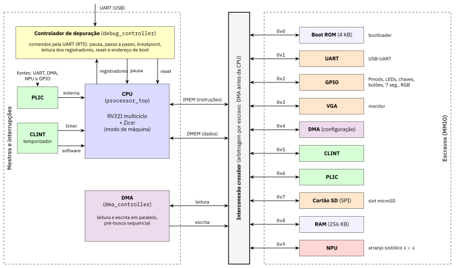

SoC RISC-V¶
Este repositório contém um sistema-em-chip (SoC) RISC-V didático, escrito em VHDL-2008 e validado em FPGA (Digilent Nexys A7-100T, Xilinx Artix-7, 100 MHz). O núcleo implementa a ISA RV32I_Zicsr em uma microarquitetura multiciclo, ligada por uma interconexão crossbar a memórias, controladores de interrupção, DMA, periféricos de entrada e saída e a uma Unidade de Processamento Neural (NPU) própria.

soc_top.vhd): mestres (CPU e DMA) e escravos mapeados em memória, ligados por uma interconexão crossbar.Motivação¶
O ensino de Arquitetura de Computadores costuma se apoiar em processadores escalares clássicos, enquanto os sistemas atuais são heterogêneos e combinam núcleos de uso geral com aceleradores de domínio específico. Simuladores didáticos abstraem o hardware, e projetos sintetizáveis de código aberto raramente são pensados para o ensino; nenhum dos ecossistemas didáticos analisados explora a aceleração neural.
Este projeto propõe uma plataforma que expõe, em hardware real, as decisões de projeto de um SoC completo: do caminho de dados do processador ao barramento, à hierarquia entre mestres e escravos, às interrupções e à integração de um acelerador. Todos os blocos são escritos para serem lidos e modificados, com testes automatizados e uma documentação que acompanha o código.
A ISA RISC-V¶
A arquitetura do conjunto de instruções (ISA) define a interface entre o software e o hardware. O RISC-V é uma ISA aberta, livre de royalties e modular: um conjunto base obrigatório de instruções inteiras (como o RV32I) pode ser estendido por extensões padronizadas, como multiplicação (M) e ponto flutuante (F), ou por extensões próprias. Como toda arquitetura RISC, segue o modelo load/store: só as instruções de carga e armazenamento acessam a memória, e as operações lógicas e aritméticas ocorrem entre registradores.
RV32I_Zicsr
O RV32I é o conjunto base de instruções inteiras de 32 bits. A extensão Zicsr acrescenta as instruções que leem e escrevem os registradores de controle e estado (CSRs), necessárias para tratar exceções e interrupções.
A microarquitetura é a forma como a ISA é implementada em hardware, e cada escolha é um compromisso. O tempo de execução de um programa é
em que \(N_{\text{instruções}}\) depende do programa e da ISA, o CPI (ciclos por instrução) da microarquitetura e \(T_{\text{ciclo}}\) do caminho crítico. Uma organização monociclo tem CPI igual a 1, mas o período do relógio precisa acomodar a instrução mais lenta; a organização multiciclo, usada no SoC, divide cada instrução em estágios, reaproveita as unidades funcionais e permite um relógio mais rápido.
Recursos¶
| Bloco | Descrição |
|---|---|
| Núcleo | RV32I_Zicsr multiciclo, modo de máquina, com exceções e interrupções (CLINT e PLIC) |
| Interconexão | Crossbar com arbitragem por escravo: mestres que acessam escravos diferentes são atendidos no mesmo ciclo |
| Memórias | Boot ROM de 4 KB (bootloader) e RAM de 256 KB de porta dupla |
| DMA | Controlador de acesso direto à memória, mestre do barramento ao lado da CPU |
| Periféricos | GPIO (LEDs, chaves, botões, displays de 7 segmentos, LEDs RGB e Pmods), UART pelo USB e UART2 no Pmod JA, VGA 320×240 e cartão microSD |
| NPU | Arranjo sistólico 4×4 INT8 para inferência de redes neurais (documentação própria) |
| Depuração | Controlador pela UART: pausa, passo a passo, breakpoint em hardware e leitura dos registradores |
Mapa de memória¶
| Região | Endereço base | Tamanho |
|---|---|---|
| Boot ROM | 0x0000_0000 |
4 KB |
| UART | 0x1000_0000 |
64 KB |
| GPIO | 0x2000_0000 |
64 KB |
| VGA | 0x3000_0000 |
128 KB |
| DMA | 0x4000_0000 |
64 KB |
| CLINT | 0x5000_0000 |
64 KB |
| PLIC | 0x6000_0000 |
256 KB |
| Cartão SD | 0x7000_0000 |
16 B |
| RAM | 0x8000_0000 |
256 KB |
| NPU | 0x9000_0000 |
256 MB |
| UART2 | 0xA000_0000 |
16 B |
A decodificação e os registradores de cada região estão em Memória e DMA.
Organização desta documentação¶
- Primeiros passos: ferramentas, simulação, compilação e execução na placa.
- Processador: as microarquiteturas monociclo e multiciclo e o tratamento de exceções e interrupções.
- SoC: a interconexão, a memória e o DMA e o controlador de depuração.
- Periféricos: GPIO, UART, VGA, cartão microSD e NPU.
- Software: a compilação e o build, o boot e os linker scripts.
- HAL: as bibliotecas de acesso aos periféricos, cada uma com a referência das funções e um programa de exemplo.
- Aplicações: programas e testes, os servidores da NPU e as ferramentas do hospedeiro.
- Desenvolvimento: a verificação, a síntese em FPGA e os resultados da síntese.
Estrutura do repositório¶
RISC-V/
├── rtl/
│ ├── core/ # Núcleos monociclo e multiciclo (cada um com o seu pkg/ da ISA)
│ ├── soc/ # soc_top, interconexão, Boot ROM, RAM, DMA, CLINT, PLIC e depuração
│ └── perips/ # GPIO, UART, VGA, cartão SD e NPU (submódulo)
├── sim/ # Testes Cocotb: unitários, de integração e end-to-end
├── fpga/
│ ├── constraints/ # XDC comum e das placas Nexys 4 e Nexys A7
│ ├── scripts/ # Síntese, programação e gravação da flash (Vivado em modo batch)
│ ├── sw/ # Bootloader, BSP/HAL, linker scripts, apps, testes e servidores
│ ├── upload.py # Envio de programas pela UART (e gravação no cartão SD)
│ └── sd_image.py # Gravação do cartão SD pelo computador
├── tools/ # Clientes da NPU, benchmarks e depurador
├── scripts/ # Seleção de testes e dependências (CI)
├── docs/ # Esta documentação (MkDocs)
└── makefile # Testes, compilação, síntese e upload